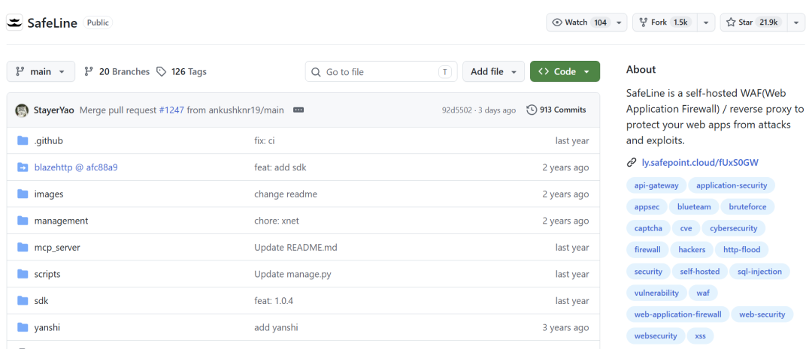
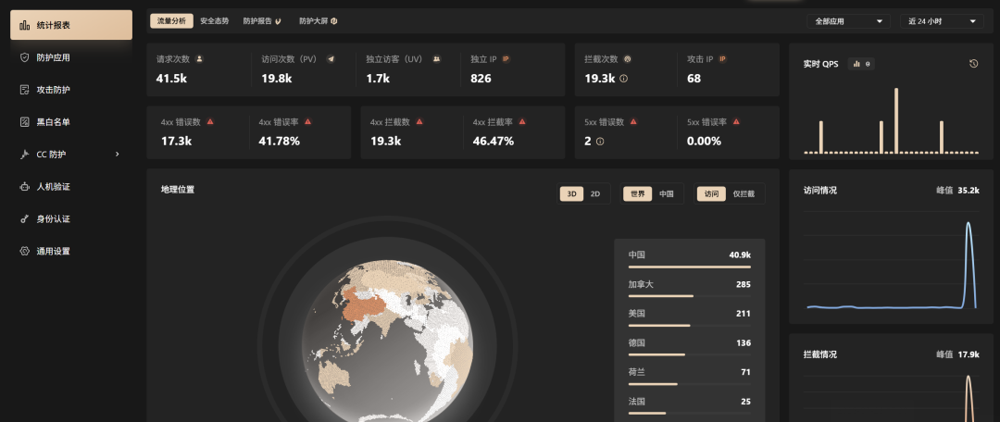
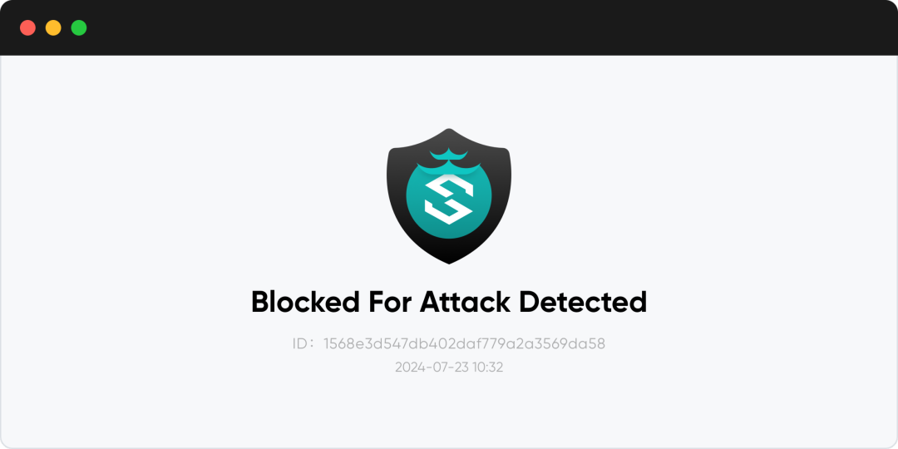
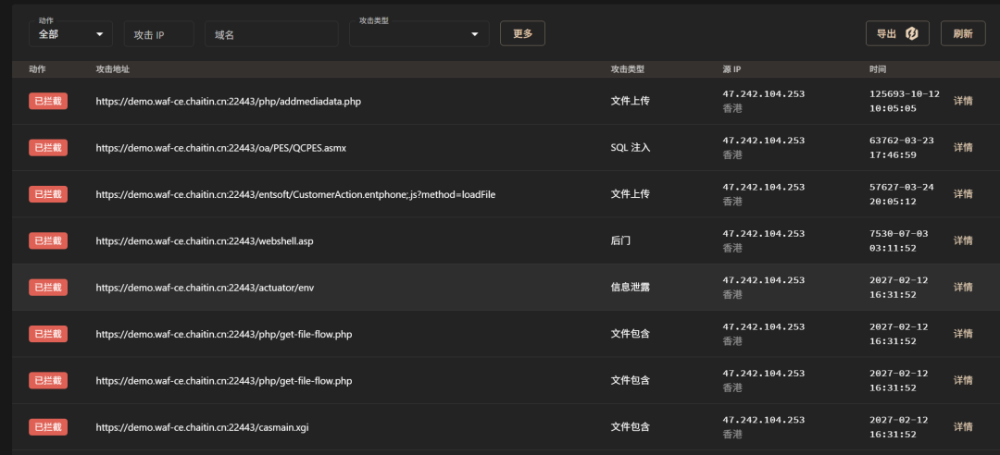
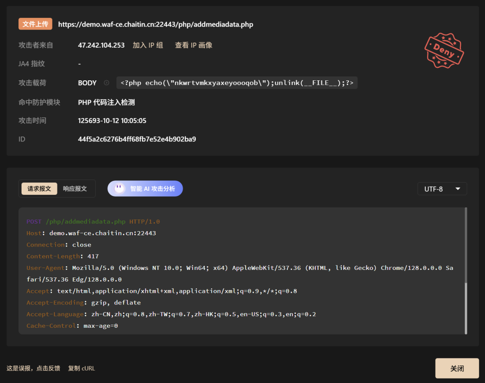
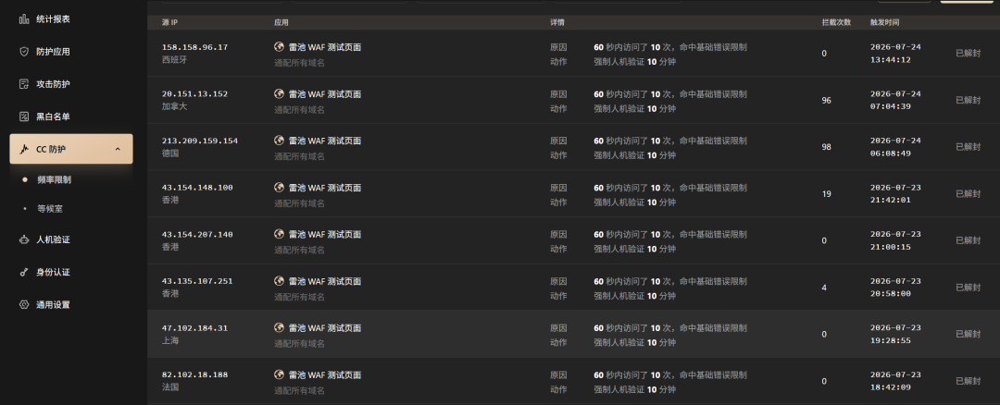

有人网站上线的第一天就遭到了 3000 次的攻击。
你没看错。
只要你的网站有公网IP地址，爬虫、漏洞扫描器、暴力破解脚本等工具就会自动找到你。
最烦人的就是SQL注入、XSS、命令注入等攻击，你只写代码是防不住的。
总会有漏网之鱼。
一旦被注入成功，数据库就会直接裸奔，损失是无法估量的。
最近在 GitHub 上看到了 SafeLine，这个问题终于有人认真地做过了。
它的名字叫 SafeLine，中文名叫“雷池”，在 GitHub 上已经有 21000 多个 Star。

它就是安装在你的服务器上的一台Web应用防火墙，所有的进入你网站的流量都要经过它的安检。

来看看实际用起来是啥样
假如你的网站运行在 80 端口上，你想要为它加上一层保护。
登录到雷池管理后台，在“防护站点”中选择“添加站点”，填写好域名以及上游服务器地址之后点击提交。
这样就完成了配置，流量也已经受到雷池的保护了。
现在试试在 URL 后面拼一个 ?id=1 AND 1=1。
经典的SQL注入payload。

请求瞬间被拦住。
直接返回拦截提示，后端也碰不到。
再看一下管理后台里的防护日志。

攻击者的IP地址、地理位置、Payload详情等信息都齐全。
还会把被触发判定的那一段用高亮的方式显示出来。
语义分析就是这么精准，不是靠关键词命中，是真的"读懂"了攻击意图。

整个配置过程不到五分钟，一条命令就装好了，一个界面就搞定了，真的很简单。
有人要好奇了，怎么做到的
01 智能语义分析，而不仅仅是正则匹配。
传统的WAF是用正则表达式一条条地去匹配，规则很多，维护起来很困难，而且误报率很高。
雷池使用了自己研发的语义分析引擎，在词法、语法层面对请求进行解析，从而理解出攻击意图，就像人一样“读懂”了。
对于0day攻击，传统的基于规则的WAF基本上是束手无策。
从攻击原理出发进行语义分析，即使没有见过也可以被识别出来。
33669 个样本实际测量。
平衡模式检出率为71.65%。
在相同测试条件下，它的误报率只有 0.07%，相比传统方案降低了约 250 倍。
同时检测准确率达到了 99.45%，提升了约 17 个百分点。
在严格的模式下，检出率可以达到76.17%。
02 防爬虫的人机验证。
互联网上超过 60% 的流量来自爬虫和自动化程序。
漏洞扫描器、蠕虫病毒、暴力破解脚本等都是机器流量。
雷池的滑块验证码可以准确地区分出人与机器。
真人放行，爬虫拦截。
你不需要再手动维护IP黑名单了，也不会有误伤正常访问者的风险，可以节省大量的运维时间。
03 前端代码动态加密。
这是其它的WAF所不具备的功能。
开启之后，你的网页的HTML和JS每次访问都会以不同的加密形式出现。
相同的源码，每次抓取到的内容都不同。
攻击者即使看了源码也无法分析出网站结构来，也就不能利用抓到的页面来进行攻击了。
就给源码穿上了隐身衣。

04 CC 攻击和暴力破解防护。
单个IP在10秒内请求超过50次就会被封禁10分钟，参数你可以在后台自己设置。
还可以和人机验证一起进行智能化处理，不需要去写iptables规则。

内含IP地理位置数据库，在封禁和日志中都可以看到攻击源地的信息，排查起来很便捷。
想试的话，装起来很简单
前提是 Linux 服务器装了 Docker，root 用户执行一条命令就行:
bash -c "$(curl -fsSLk https://waf-ce.chaitin.cn/release/latest/manager.sh)"
安装好之后访问 https://你的IP地址:9443 进入管理后台。
第一次登录要绑定双因素认证，安全度很高。
不过有几点得注意
雷池需要部署在 Linux 服务器上，当前官方安装环境支持 x86_64 和 arm64，具体型号能力以版本说明为准。
社区版最多可以添加10个防护点，如果网站比较多的话就要用到专业版或商业版。
它默认占用 9443 端口，端口冲突就起不来，部署之前一定要先检查。
本质上还是语义分析和规则检测，并不能万无一失，零日漏洞还是要等到规则更新之后才能解决，不要指望它能包打天下。
写在最后
有人认为“语义分析也是一条规则，并不是万能的”，这话没错。
但场景分两类：
已知攻击，语义分析比正则精准得多，误报率 0.07% 是实证数据。未知攻击，语义分析至少从原理层面识别，不是纯靠签名等更新。
所以不是万能的，但是比传统的方案好很多，这没什么争议。
需要的朋友可以试一下。
欢迎交流。
项目基于 GPL-3.0 协议开放,感兴趣的同学可以去 GitHub 仓库看看源码和文档。
开源地址：https://github.com/chaitin/SafeLine
既然看到这了,欢迎随手点赞、在看、转发,也可以给我个星标⭐,接收最新的文章,我们下期见!